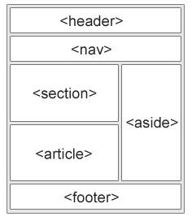

IE9
IE9是在2011-03-05发布的
语义==意义
语义元素：一个语义元素能够清楚的描述其意义给浏览器和开发者
无语义：div span
有语义：form table img
H5提供了新的语义元素来明确WEB页面的不同部分
header(头部) , nav(导航栏) section(章节) article(定义独立的内容) asied(侧边栏)， footer(底部)，figcaption figure
section(部分):定义文档中的节(区段)。比如：章节，页眉
section包含了一组内容和标题
The World Wide Fund section section
article(文章artikl):定义独立的内容
IE9是在2011-03-05发布的
nav(导航):定义导航链接部分，并不是所有都在其中
aside(旁边 asaid)：定义页面主区域以外的内容(如侧边栏)，aside标签的内容与主区域内容相关
header：描述文档的头部区域，用于定义内容的介绍展示区域，可以使用多个
Windows IE9是2011年3月14号发布的。
footer(页尾，底部):描述文档的底部区域，如：一个页脚通常包含文档的作者，著作权信息，联系信息等
文章中可以使用多个footer
figure(数字，外形，形状，figer)：规定独立的流内容(图像，图表，照片，代码等)
figure元素的内容该与主内容相关，删除，对文档无影响
figcaption：定义figure 元素的标题
元素应该放置于 “figure” 元素的第一个或最后一个子元素的位置

以上除了figcaption都是块元素，为了这些块级元素在所有浏览器都生效，需要在样式表中设置 header，section，nav,footer,figure,aside,article{ display:block; }
IE8及更早版本不支持，需要通过JS来解决兼容问题
下载得到html5shiv.min.js文件：兼容IE8及低版本浏览器
在浏览器小于IE9版本时会加载html5shiv.js文件. 你必须将其放置于
元素中，因为 IE浏览器需要在头部加载后渲染这些HTML5的新元素如下代码 [if lt IE 9]> < script src="html5shiv.js">/script> < ![endif]